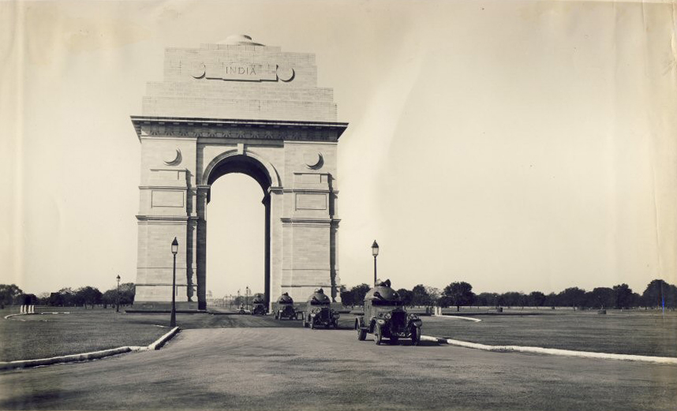

India Gate : History
The India Gate was part of the work of the Imperial War Graves Commission (I.W.G.C), which came into existence
in December 1917 under the British rule for building war graves and memorials to soldiers who were killed in the
First World War. The foundation stone of the gate, then called the All India War Memorial, was laid on 10
February 1921 at
16:30 by the visiting Duke of Connaught in a ceremony attended by Officers and Men of the British Indian Army,
Imperial Service
Troops, the Commander in Chief, and the viceroy. On the occasion, the viceroy is reportedly to have
said, "The stirring tales of individual heroism, will live for ever in the annals of this country", and that the
memorial which

was a tribute to the memory of heroes, "known and unknown", would inspire future generations to endure hardships
with similar fortitude and "no less valour".
The Duke also read out a message by the King, which said, "On this
spot, in the
central vista of the Capital of India, there will stand a Memorial Archway, designed to keep", in the thoughts
of future generations, "the glorious sacrifice of the officers and men of the British Indian Army who fought and
fell". During
the ceremony, the Deccan Horse, 3rd Sappers and Miners, 6th Jat Light Infantry, 34th Sikh Pioneers, 39th Garhwal
Rifles, 59th Scinde Rifles (Frontier Force), 117th Mahrattas, and 5th Gurkha Rifles (Frontier Force), were
honoured with title
of "Royal" in recognition of the distinguished services and gallantry of the British Indian Army during the
Great War".
Ten years after the foundation stone laying ceremony, on 12 February 1931, the memorial was inaugurated by Lord
Irwin, who on the occasion said "those who after us shall look upon this monument may learn in pondering its
purpose something
of that sacrifice and service which the names upon its walls record". In the decade between the laying of
foundation stone of the memorial and its inauguration, the rail-line was shifted to run along the Yamuna river,
and the New Delhi
Railway Station was opened in 1926.
The memorial-gate was designed by Sir Edwin Lutyens, who was not only the main architect of New Delhi, but a
leading designer of war memorials. He was a member of the I.W.G.C., and one of Europe's foremost designers of
war graves and
memorials.
 He designed sixty-six war memorials in Europe, including the highly regarded cenotaph in London in
1919, the first national war memorial erected after World War I, for which he was commissioned by the
British prime minister. The memorial in New Delhi like the Cenotaph in London, is a secular memorial, free of
religious and "culturally-specific iconography such as crosses".
He designed sixty-six war memorials in Europe, including the highly regarded cenotaph in London in
1919, the first national war memorial erected after World War I, for which he was commissioned by the
British prime minister. The memorial in New Delhi like the Cenotaph in London, is a secular memorial, free of
religious and "culturally-specific iconography such as crosses".
The India gate, which has been called a "creative reworking of the Arc de Triomphe" has a span of 30 feet, and
lies on the eastern axial end of Kingsway, present day Rajpath, the ceremonial procession
route in New
Delhi. The 42-metre (138-foot)-tall India gate, stands on a low base of red Bharatpur stone and rises in stages
to a huge moulding. The shallow domed bowl at the top was intended to be filled with burning oil on
anniversaries but this is
rarely done. The memorial-gate hexagon complex, with a diameter of about 625 metres, covers approximately 306,000
m2 in area.